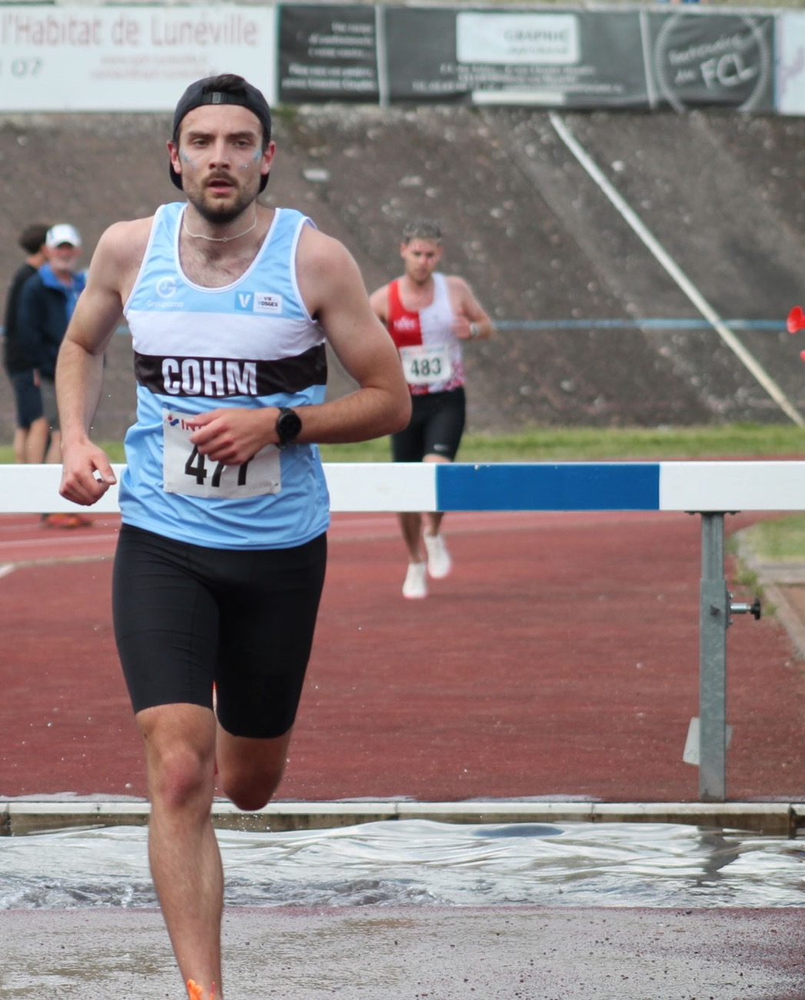

Saison 2026 – 2027
Du cross de décembre au trail des crêtes en septembre, en passant par une marche : toutes les courses du COHM au même endroit, avec leurs dates, leurs distances et leurs inscriptions.
Chaque rendez-vous a sa couleur, reprise des pastilles du logo. Cliquez sur une course pour voir sa fiche.
500 m à 9 km, de l'éveil athlé à la course des as
Dimanche 6 décembre 2026 · Base de loisirs, Saulxures-sur-Moselotte
14, 28 et 38 km, dans la neige des hauteurs
Dimanche 21 février 2027 · Gymnase de Cornimont
23 km et 12 km, plus deux courses jeunes
Dimanche 13 juin 2027 · Saulxures-sur-Moselotte
Course des as, course populaire et courses jeunes, le soir
Samedi 17 juillet 2027 · Place du Champtel, La Bresse
40 km, 25 km et 11 km sur les crêtes
Dimanche 5 septembre 2027 · Station La Bresse Hohneck
5, 10 et 20 km, à son rythme
Date 2027 pas encore annoncée · Salle polyvalente, Vagney
Cross Super U · Championnats des Vosges de cross
Dimanche 6 décembre 2026
Base de loisirs de Saulxures-sur-Moselotte, le long du lac
Des boucles de 500 m à 2 km autour du lac, de l'éveil athlé jusqu'à la course des as. Primes de la course des as : 100, 60 et 40 €, chez les hommes comme chez les femmes. Chaque enfant des courses éveil et poussins est récompensé.
Partenaires : Super U, Groupama, Weldom, Comité des Vosges d'Athlétisme. Renseignements : 03 29 24 11 61.
Programme des départs
| Départ | Course | Distance |
|---|---|---|
| 11 h 00 · 11 h 10 | Éveils athlétiques M / FNés de 2018 à 2020 | 500 m |
| 11 h 20 · 11 h 30 | Poussins / PoussinesNés en 2016 et 2017 | 1 000 m |
| 11 h 40 · 11 h 42 | Benjamins / BenjaminesNés en 2014 et 2015 | 2 500 m |
| 12 h 00 · 12 h 02 | Minimes H / FNés en 2012 et 2013 | 3 500 m |
| 12 h 35 · 12 h 37 | Cross court H / F, cadettesCadettes nées en 2010 et 2011 | 4 000 m |
| 13 h 15 · 13 h 17 | Cadets, juniores FNés de 2008 à 2011 | 4 500 m |
| 13 h 45 · 13 h 47 | Juniors H, course des as FJuniors 2008-2009, as nées en 2007 et avant | 6 000 m |
| 14 h 30 | Course des as HNés en 2007 et avant | 9 000 m |
Trail Hivernal de la Moselotte · 15e édition
Dimanche 21 février 2027
Départ et arrivée au gymnase de Cornimont
Une boucle sur les hauteurs de Cornimont, Basse-sur-le-Rupt et Saulxures-sur-Moselotte, entre 500 et 1 000 m d'altitude. Le Grand THM et le THM comptent pour les UTMB World Series. Une partie de la recette est reversée à la Ligue contre le cancer.
Renseignements : Hervé Claudel, 06 75 46 63 20. Hébergement limité : à prévoir à l'avance.
Les trois formats
| Course | Départ | Public | En ligne / sur place |
|---|---|---|---|
| Grand THM38 km · 1 800 m D+ | 8 h 00 | Espoirs et plus | 35 € / 39 € |
| THM28 km · 1 400 m D+ | 9 h 00 | Espoirs et plus | 25 € / 29 € |
| Mini THM14 km · 700 m D+ | 10 h 00 | Juniors et plus | 14 € / 17 € |
Trophée Philippe Bragard, président fondateur du COHM
Dimanche 13 juin 2027
Saulxures-sur-Moselotte
Le trophée Philippe Bragard revient au premier homme et à la première femme du 23 km. Repas et ravitaillement à l'arrivée, et un ravitaillement à mi-course sur le 23 km. Remise des prix à partir de 12 h 30.
Partenaires : Crédit Agricole, Super U, Groupama.
Les formats 2027
| Course | Départ | Public |
|---|---|---|
| Trail des Chamois23 km · 840 m D+ | 9 h 00 | Espoirs et plus |
| Mini trail12 km · 420 m D+ | 10 h 00 | Cadets et plus |
| Animation éveil athlé500 m · gratuit | 11 h 30 | Nés de 2018 à 2020 |
| Course poussins1 km · gratuit | 11 h 45 | Nés en 2016 et 2017 |
Avec La Bressaude section athlétisme
Samedi 17 juillet 2027
Place du Champtel, La Bresse · secrétariat à la Halle des Congrès
Une soirée de courses dans La Bresse, des plus petits jusqu'à la course des as. La 27e édition a eu lieu le samedi 18 juillet 2026. Croix-Rouge sur place, restauration et buvette sur le parcours et à la Halle des Congrès.
Le programme de l'édition 2026
| Départ | Course | Tarif |
|---|---|---|
| 19 h 45 | Animation baby730 m · nés en 2017 et après | gratuit |
| 20 h 00 | Course 1, poussins1 300 m · nés en 2015 et 2016 | 3 € |
| 20 h 15 | Course 2, benjamins-minimes2 500 m · nés de 2011 à 2014 | 3 € |
| 20 h 30 | Course 3, populaire3 600 m · nés en 2010 et avant | 6 € |
| 21 h 00 | Course 4, des as7 740 m · nés en 2010 et avant | 11 € |
Avec La Bressaude athlétisme · au pied des pistes
Dimanche 5 septembre 2027
Station La Bresse Hohneck, 88 route de Vologne, La Bresse
Les crêtes des Hautes-Vosges, au départ de la station. La 16e édition a eu lieu le dimanche 20 septembre 2026. Ravitaillements sans gobelet, repas à l'arrivée et un cadeau pour chaque participant.
Les formats de l'édition 2026
| Course | Départ | Licencié / non licencié |
|---|---|---|
| Rainkopf Trail40 km · 1 800 m D+ · index UTMB 50K | 8 h 00 | 40 € / 42 € |
| Trail Nature25 km · 925 m D+ · index UTMB 20K | 9 h 30 | 25 € / 27 € |
| Tour des Champis11 km · 358 m D+ · cadets et plus | matin | 12 € |
Marche populaire internationale des Chamois · avec l'association Les Courtes Gueules
Date 2027 pas encore annoncée
Salle polyvalente, place de la Libération, Vagney
Trois parcours sans difficulté particulière, à faire à son rythme. Boisson et collation gratuites aux contrôles, petite restauration aux contrôles 2 et 3, et repas à l'arrivée. L'édition prévue le 23 août 2026 a été annulée.
Contact : D. Vernier, 07 86 87 98 38, cohm@laposte.net.
Les parcours
| Parcours | Dénivelé | Départs |
|---|---|---|
| 5 km | +10 m | De 7 h à 14 h |
| 10 km | +218 m | De 7 h à 14 h |
| 20 km | +676 m | De 7 h à 13 h |

Le Club Olympique de la Haute Moselotte organise ou co-organise six rendez-vous par saison, de Saulxures-sur-Moselotte à Cornimont, Vagney et La Bresse.
Les recettes de ces manifestations contribuent aux déplacements des athlètes, notamment des plus jeunes, et au matériel d'entraînement.
Partenaires de la saison
Démonstration EventLyx : réponses tirées des informations de cette page.